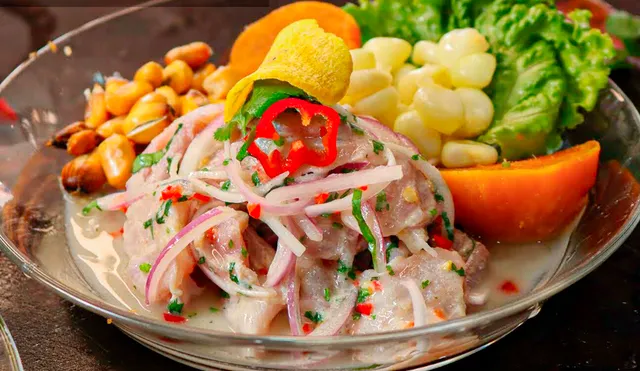

Ceviche de pota

Descripción
El ceviche de pescado es un plato tradicional de la cocina latinoamericana, especialmente popular en países costeros como Perú. Este exquisito manjar consiste en trozos de pescado fresco marinados en jugo de limón o lima, que cocinan la carne del pescado en frío, dejándola delicadamente curada y llena de sabor.
Ingredientes
- 1 kg de pescado blanco
- 1 taza de Jugo de limón
- Ají amaríllo
- 1 unidad de Cebolla grande cortada en juliana
- 1 unidad de Ají molido
- 1 rama de Apio picado
Preparación
- Divida el filete de lenguado en mitades y deseche las espinas y los extremos
- Corte el pescado en cubos de dos centímetros de lado
- Colóquelos en un bol junto con el culantro. Sazone con sal, el ajo y el ají limo
- Vierta el jugo de limón y remueva
- Añada la cebolla, previamente lavada y escurrida, y mezcle
- Sirva las lechugas, acomode encima el cebiche de lenguado y acompañe con el camote y el choclo